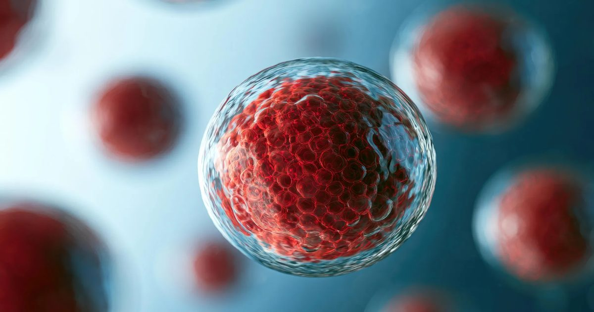

Ученые обнаружили удивительный парадокс в том, как наши клетки стареют
Ученые обнаружили, что система рециркуляции клеток организма ведет себя совершенно иначе во время старения, чем считалось ранее, причем более высокая активность иногда связана с ухудшением физического здоровья.
Небольшое исследование показывает, что даже мягкие физические упражнения могут помочь восстановить более молодые паттерны клеточной рециркуляции у пожилых людей.